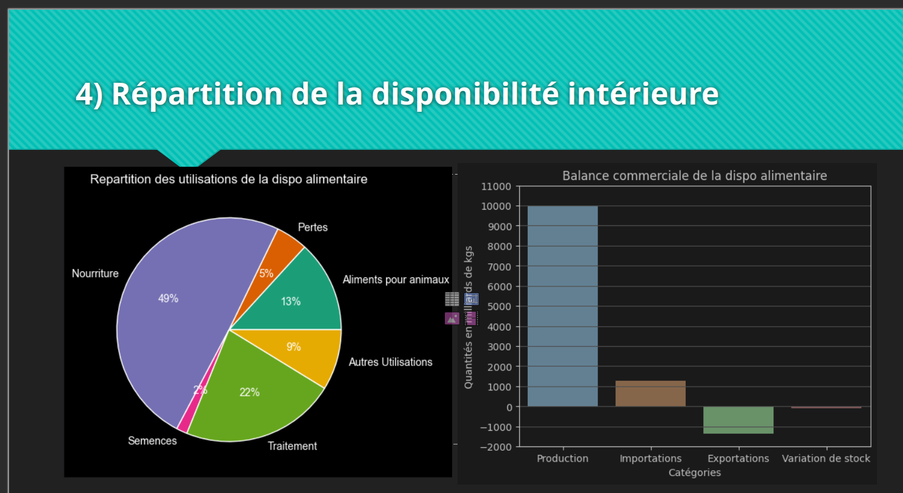

Étude de santé publique — Sous-nutrition mondiale (FAO)

De quoi s'agit-il ?
Mission réalisée en tant que Data Analyst au sein d'une équipe de chercheurs de la FAO (Food and Agriculture Organization de l'ONU), dont l'objectif est de contribuer à un monde libéré de la faim. L'équipe menait une étude d'ampleur sur l'alimentation et la sous-nutrition mondiale, découpée en deux volets temporels : mon prédécesseur avait traité la période 2018 à aujourd'hui, ma mission portait sur la partie historique 2013-2017. L'analyse devait répondre à des questions précises validées en amont avec l'équipe, avec une présentation orale challengée sur la propreté du code, les jointures et le respect du RGPD.
Sur quoi je me suis appuyé
- Sources : 4 fichiers FAO — population mondiale, disponibilité alimentaire par pays et produit (15 605 lignes), aide alimentaire internationale par pays, et taux de sous-nutrition par pays (par tranches de 3 ans).
- Qualité : unités hétérogènes à harmoniser (population en milliers, quantités alimentaires en milliers de tonnes) ; valeurs non numériques dans la colonne sous-nutrition (ex. "<0.1") nécessitant une conversion forcée ; désynchronisation des noms de pays entre les 4 sources (jusqu'à 64 pays sans correspondance entre
dispo_alimentaireetpopulation), résolue par harmonisation manuelle des libellés. - Volumétrie finale : analyse portant sur l'année 2017, couvrant 174 à 203 pays selon les jointures, pour une population mondiale totale de 7,54 milliards de personnes.
Comment j'ai procédé
- Exploration systématique de chacun des 4 fichiers (dimensions, types, valeurs manquantes) avant toute jointure, avec harmonisation des unités (conversion en kg, population en unités réelles).
- Détection et résolution méthodique des écarts de nommage entre tables avant chaque jointure, par différence d'ensembles (
set()) plutôt que par vérification ligne à ligne — plus rapide et systématique. - Choix réfléchi du type de jointure selon la table la plus fiable à chaque cas (jointure à gauche sur la table de référence pour ne pas perdre de données pertinentes).
- Remplacement des valeurs manquantes par 0 lorsque cela avait un sens métier (ex. disponibilité alimentaire non renseignée), documenté à chaque étape.
- Analyse statistique descriptive complète : proportions, tops/flops par pays, corrélations (coefficient de Pearson avec p-value) entre aide alimentaire reçue et niveau de sous-nutrition, année par année.
Ce que ça a produit
- 535,7 millions de personnes en état de sous-nutrition en 2017, soit 7,10 % de la population mondiale.
- La disponibilité alimentaire mondiale permettrait théoriquement de nourrir 116,93 % de la population ; en ne considérant que les produits végétaux, elle couvrirait encore 96,32 % des besoins — un écart qui interroge sur la répartition plutôt que sur la production.
- 60,78 % de la disponibilité intérieure part in fine dans l'alimentation humaine directe, contre 13,24 % pour l'alimentation animale.
- Sur les céréales, cette proportion varie fortement par produit : seulement 13,1 % du maïs sert à l'alimentation humaine (57,1 % à l'alimentation animale), contre 79,3 % pour le riz.
- Haïti et la Corée du Nord affichent les taux de sous-nutrition les plus élevés (près de 50 %) parmi les pays étudiés.
- La corrélation entre aide alimentaire reçue et niveau de sous-nutrition est positive mais faible (r = 0,267, p < 0,001) sur l'ensemble de la période, et très instable d'une année sur l'autre (de r = 0,380 en 2013 à r = 0,058 en 2014) — l'aide ne semble donc pas allouée de façon strictement proportionnelle au besoin.
- Analyse de cas ciblée sur la Thaïlande : 83,41 % du manioc produit est exporté plutôt que consommé localement, illustrant comment un pays peut produire en abondance tout en ayant des flux import/export déconnectés des besoins nutritionnels internes.
- Mise en évidence de pays où les pertes alimentaires par personne en sous-nutrition sont particulièrement élevées (Bulgarie et Costa Rica en tête), signal de gaspillage à fort potentiel d'amélioration.
Ce que je ferais différemment
Ce projet reste l'un de mes tout premiers en analyse de données, et les analyses produites sont restées assez superficielles : essentiellement des tris, sommes et proportions, avec très peu de statistiques descriptives à proprement parler (médiane, écart-type, dispersion par pays, détection d'outliers). Une reprise de ce projet aujourd'hui gagnerait à intégrer ces indicateurs pour mieux caractériser la variabilité entre pays plutôt que de se limiter à des classements de type top 10, et à pousser davantage l'analyse des corrélations au-delà du seul lien aide/sous-nutrition déjà exploré.